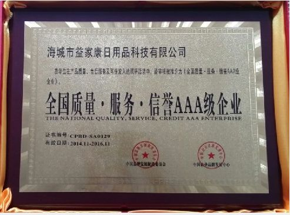
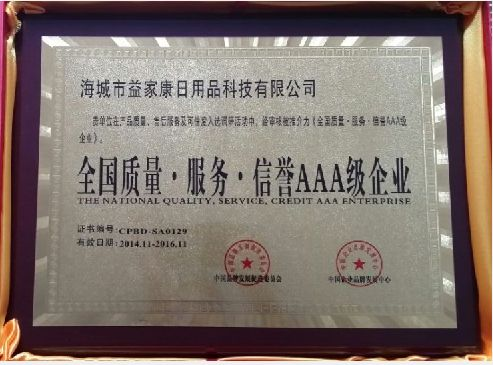

阿里巴巴是全球企业间（B2B）电子商务的著名品牌，是目前全球最大的网上交易市场和商务交流社区。 阿里巴巴创建于1998年年底，总部设在杭州，并在海外设立美国硅谷、伦敦等分支机构。阿里巴巴是全球企业间(B2B)电子商务的著名品牌，是目前全球最大的网上贸易市场。良好的定位，稳固的结构，优秀的服务使阿里巴巴成为全球首家拥有211万商人的电子商务网站，成为全球商人网络推广的首选网站，被商人们评为"最受欢迎的B2B网站"。 阿里巴巴两次被哈佛大学商学院选为MBA案例，在美国学术界掀起研究热潮，四次被美国权威财经杂志《福布斯》选为全球最佳B2B站点之一，多次被相关机构评为全球最受欢迎的B2B网站、中国商务类优秀网站、中国百家优秀网站、中国最佳贸易网，被国内外媒体、硅谷和国外风险投资家誉为与Zgsyw， Yahoo， Amazon，eBay，AOL比肩的六大互联网商务流派代表之一。 阿里巴巴创始人、首席执行官马云被著名的"世界经济论坛"选为"未来领袖"、被美国亚洲商业协会选为"商业领袖"，是50年来第一位成为《福布斯》封面人物的中国企业家，并曾多次应邀为全球著名高等学府麻省理工学院、沃顿商学院、哈佛大学讲学。 阿里巴巴（香港联合交易所股份代号：1688）为全球领先的小企业电子商务公司，也是阿里巴巴集团的旗舰业务。阿里巴巴在1999年成立于中国杭州市，通过旗下三个交易市场协助世界各地数以百万计的买家和供应商从事网上生意。三个网上交易市场包括：集中服务全球进出口商的国际交易市场、集中国内贸易的中国交易市场，以及透过一家联营公司经营、促进日本外销及内销的日本交易市场。
1999年9月，马云带领下的18位创始人在杭州的公寓中正式成立了阿里巴巴集团，集团的首个网站是英文全球批发贸易市场阿里巴巴。同年阿里巴巴集团推出专注于国内批发贸易的中国交易市
早期的阿里巴巴团队于马云公寓内工作场。
1999年10月，阿里巴巴集团从数家投资机构融资500万美元。
2000年9月，阿里巴巴集团举办首届西湖论剑，汇聚互联网界的商业和意见领袖讨论业界重要议题。
2001年12月，阿里巴巴注册用户数超越100万。
2002年12月，阿里巴巴集团首次实现全年正现金流入。
2003年5月，购物网站淘宝网于马云公寓内创立。
2004年7月，淘宝网发布让买家与卖家进行即时文字、语音及视频沟通的PC版通讯软件阿里旺旺。
2004年12月，阿里巴巴集团关联公司的第三方网上支付平台支付宝推出。
2005年8月11日，阿里巴巴与雅虎宣布双方已签署合作协议，阿里巴巴收购雅虎中国全部资产，同时获雅虎10亿美元投资，并享有雅虎品牌及技术在中国的独家使用权；雅虎获阿里巴巴40%的经济利益和35%的投票权。
2005年10月，阿里巴巴集团接管中国雅虎。
2006年7月，淘宝大学课程推出，向买家和卖家提供电子商务培训及教育。
 
